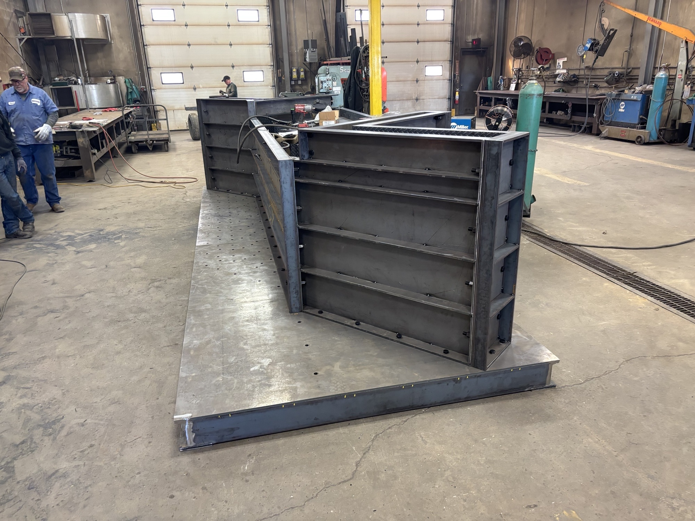
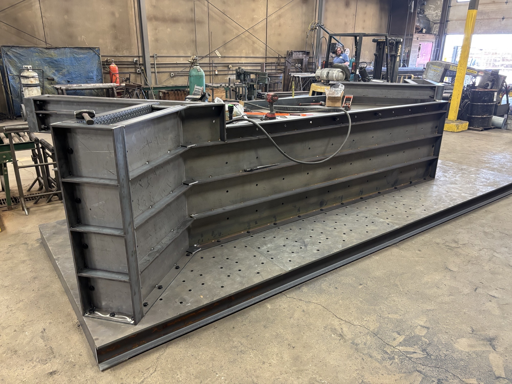
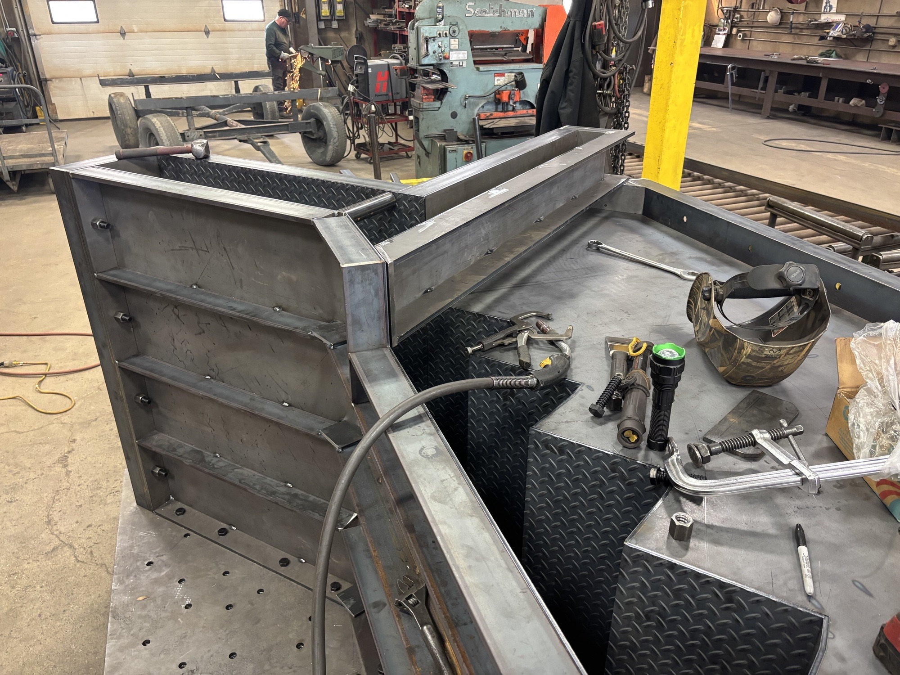
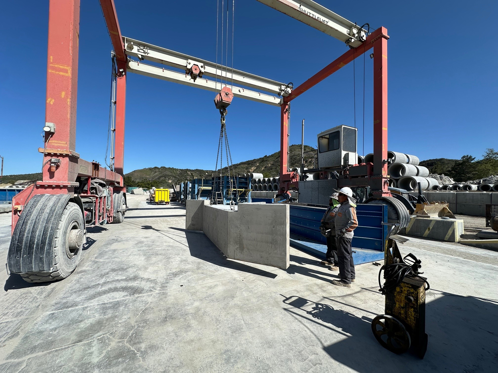
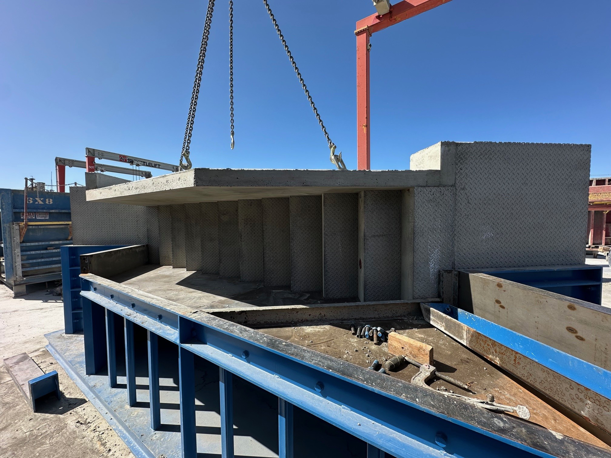
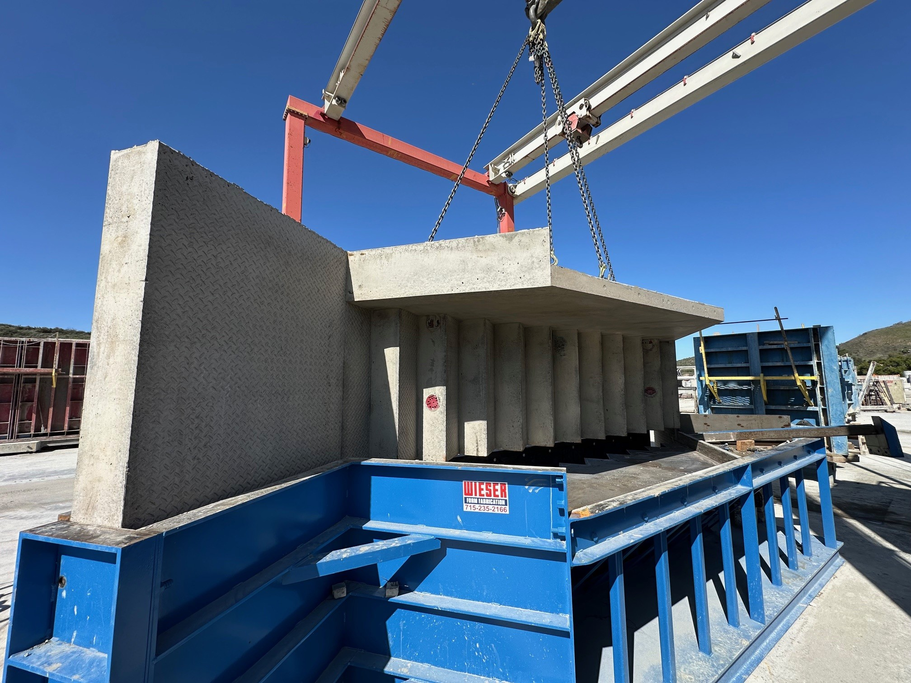

Stair Form - (16' x 12' x 4')
Project Overview
Objective
Design and fabricate a 7' x 13' x 5' pool form engineered for structural accuracy, modular assembly, and high-quality concrete finishes, while improving efficiency and minimizing material waste.
Objective
Design and fabricate a 16' x 12' x 4' precast stair form optimized for repeatable use, precision casting, and on-site efficiency. The goal was to create a durable form that maintains alignment and surface finish through multiple production cycles.
Role & Responsibilities
- Lead designer responsible for developing full 3D CAD models and shop drawings
- Created fabrication drawings with detailed component breakdown and fit-up instructions
- Assisted in weld sequencing and bracing layout to minimize warping during assembly
- Coordinated with production to verify form performance and casting consistency
Engineering Features
- Reinforced frame with adjustable supports for dimensional stability
- Removable riser panels for easy stripping and cleaning
- Modular sidewall system for casting different stair widths
- Heavy-duty corner gussets and welded joints to withstand vibration loads
Tools & Software
Autodesk Inventor (3D CAD), AutoCAD (2D Layouts), MIG Welding, and Plasma Cutting
Outcome
Delivered a fully reusable precast stair form achieving tight tolerances and consistent surface quality across multiple pours. Reduced production setup time and improved form longevity in daily plant use.
3D Model
Drawings
_page-0001.jpg)
_page-0001.jpg)
 (No DIM)_page-0001.jpg)
 (No DIM)_page-0001.jpg)
 (No DIM)_page-0001.jpg)
 (No DIM)_page-0001.jpg)
 (No DIM)_page-0001.jpg)
 (No DIM)_page-0001.jpg)
 (No DIM)_page-0001.jpg)
 (No DIM)_page-0001.jpg)
 (No DIM)_page-0001.jpg)
Photos






